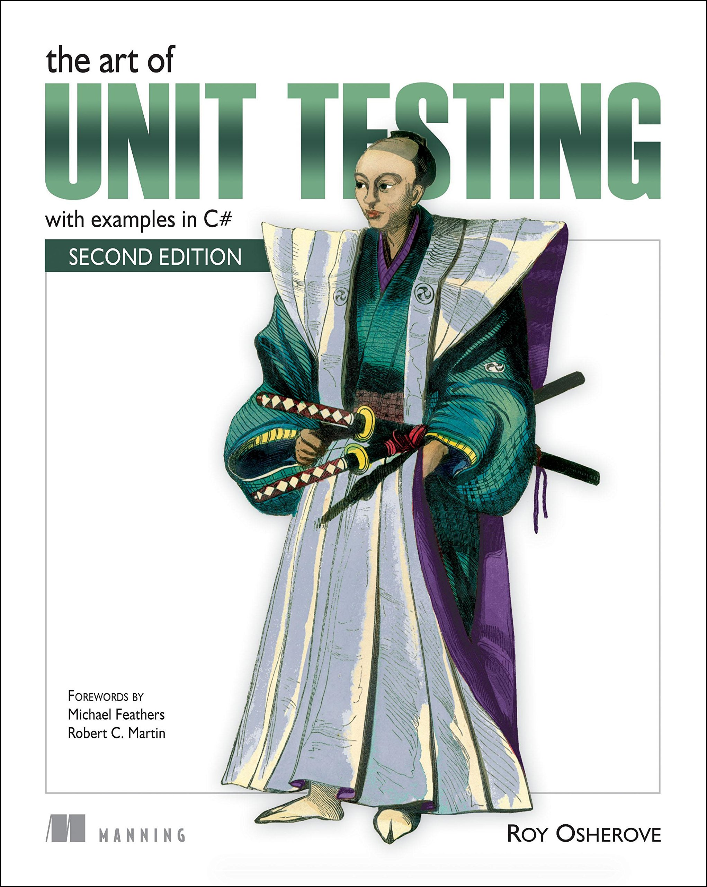

What is main property of bad code?
It's untestable
Kent Beck's rules of simple code
-
1. Runs all the tests
-
2. Contains no duplication
-
3. Express the intent of programmer
-
4. Minimizes the number of classes and methods
Given in order of importance
Testimony
Presented by Milan Popović / @komita1981
Me
PHP developer
Work for Nano Interactive
I like to learn and share knowledge
Active member of PHP Srbija
What is testing?
Testing is the activity of finding out whether a piece of code produces the intended behavior
What do people think about testing?


Time consuming
Testing is hard
Steep learning curve
Don’t make anybody any money
What testing really is?
Prove you've done your work
Reduce number of bugs
Facilitate change
Help you make better code design - easier to maintain
Ensures stable, long lasting application
Improve understanding how clients are going to use your code
Enhance security
Provide free documentation
Automated testing
When I say testing I mean AUTOMATED testing
Manual testing is time consuming and boring
Automated testing is fun and a key point for software quality
Test types
Acceptance (end-to-end)
Test as if end user would use the whole system/feature
Integration
Test how different parts of system work together
Unit
Test single unit of code - mock all dependencies

Google team suggest
- E2E - 10 %
- Integration - 20%
- Unit - 70%
Testing anti-patterns
Inverted pyramid/ice cream cone
Hourglass
What is unit testing?
A software testing method to test individual unit of source code - a method in class or a piece of code
The purpose of unit testing is not for finding bugs
Specification for the expected behaviours of the code under test
What is to be tested?
EVERYTHING
To be more precise
EVERYTHING THAT COULD BREAK YOUR APP
What does not need to be tested?
Getters/Setters
Framework
Third party packages
Protected & private methods and properties
Unit testing FIRST principles
Fast - Be fast or be dead
Independent/Isolated - Run without dependency
Repeatable - Should be idempotent
Self-verifying - Just pass or fail
Timely - Write test before production
Write unit tests before or after code?
After - You test what you code - Test Last
Development Driven Testing - DDT
Before - You code what you test - Test First
Test Driven Development - TDD

The Three Laws of TDD
- You may not write production code until you have written a failing unit test
- You may not write more of a unit test than is sufficient to fail
- You may not write more production code than is sufficient to pass the currently failing test


IBM & Microsoft - TDD - 20-40% longer to complete but 40-90% fewer bugs in production
By 2022 it will be not be possible to get a professional programming job if you do not practice TDD routinely - Allan Kelly

Member of xUnit family
Created by Sebastian Bergmann and contributors
Integrated/Supported by all modern frameworks
Integrated in most IDE (PHPStorm, Netbeans, Eclipse, ZS)
Written for PHP 5.x
Install using composer or phar
"require-dev": {
"phpunit/phpunit": "4.*"
},
PEAR install - not supported from 1.1.2015
xUnit architecture
- Test runner
- Test case
- Test fixtures
- Test suites
- Test executions
- Test result formatter
- Assertions
1. Test runner
Executable program that runs tests implemented using an xUnit framework and reports the test results
PhpUnit - phpunit/phpunit/phpunit file
2. Test case
The most elemental class
All unit tests are inherited from this class
PhpUnit - PHPUnit_Framework_TestCase class
3. Test fixtures
Set of preconditions or state needed to run a test
Known good state should be set up before the tests, and return to the original state after the tests
PhpUnit - setUp(), tearDown(), setUpBeforeClass() and tearDownAfterClass() methods
protected function setUp()
{
// preconditions or DRY code
}
protected function tearDown()
{
// clear all after tests
}
4. Test suites
Set of tests that all share the same fixture
PhpUnit - testsuites options in phpunit.xml
// part of phpunit.xml file
./app/tests/Unit/
// from the command line
phpunit --testsuite Unit
5. Test execution
setUp();
...
/* Body of test - Tested class - System Under Tests */
...
tearDown(); */
6. Test result formatter
Produces results in one or more output formats
PhpUnit test results:
. - Test succeeds
F - Assertion fails while running the test method
E - Error occurs while running the test method
R - Test has been marked as risky
S - Test has been skipped
I - Test is marked as being incomplete or not yet implemented
7. Assertions
Function that verifies the behavior (or the state) of the unit under test
Usually result is bool
PhpUnit examples
assertTrue - Check the input to verify it equals true
assertFalse - Check the input to verify it equals false
assertEquals - Check the result against another input for a match
assertContains - Check that the input contains a certain value
Many more asserts - official documentation...
PHPUnit's test goals
Easy to learn to write
Easy to write
Easy to read
Easy to execute
Quick to execute
Isolated
Composable
Test config
Configured in phpunit.xml file
./app/tests/Unit/
./app/tests/Integration/
Bootstrap example (Laravel)
Runs before all tests
require __DIR__.'/vendor/autoload.php';
date_default_timezone_set('UTC');
Carbon\Carbon::setTestNow(Carbon\Carbon::now());
Test structure
The tests for a class Class go into a class ClassTest
ClassTest inherits from PHPUnit_Framework_TestCase
The tests are public methods that are named test*
Inside the test methods assertion methods are used - assert*
PhpUnit test example (Laravel ConsoleScheduledEventTest)
// Some parts of code removed intentionaly
class ConsoleScheduledEventTest extends PHPUnit_Framework_TestCase
{
/**
* The default configuration timezone.
*
* @var string
*/
protected $defaultTimezone;
public function setUp()
{
$this->defaultTimezone = date_default_timezone_get();
date_default_timezone_set('UTC');
}
public function tearDown()
{
date_default_timezone_set($this->defaultTimezone);
Carbon::setTestNow(null);
m::close();
}
public function testEventIsDueCheck()
{
$app = m::mock('Illuminate\Foundation\Application[isDownForMaintenance,environment]');
$app->shouldReceive('isDownForMaintenance')->andReturn(false);
$app->shouldReceive('environment')->andReturn('production');
Carbon::setTestNow(Carbon::create(2015, 1, 1, 0, 0, 0));
$event = new Event('php foo');
$this->assertEquals('* * * * 4 *', $event->thursdays()->getExpression());
$this->assertTrue($event->isDue($app));
$event = new Event('php foo');
$this->assertEquals('0 19 * * 3 *', $event->wednesdays()->at('19:00')->timezone('EST')->getExpression());
$this->assertTrue($event->isDue($app));
}
}
Testing doubles
- Dummy
- Fake
- Stub
- Mock
- Spy
Generation doubles doubles
- phpunit/phpunit-mock-object
- phpspec/prophecy
- mockery/mockery
- phake/phake
- codeception/aspect-mock
- php-vci/php-vci
Prophecy
Highly opinionated mocking framework for PHP 5.3+
Created by Konstantin Kudryashov and contributors
Initially it was created to fulfil phpspec2 needs
From version 4.5 PHPUnit is the out-of-the-box support for Prophecy
Developers will be encouraged to use Prophecy instead of the PHPUnit mocks
Composer install
"require-dev": {
"phpspec/prophecy": "~1.0"
},
Every word has a logical meaning, even the name of the library itself (Prophecy)
“Prophecy has been named that way because it concentrates on describing the future behavior of objects with very limited knowledge about them. But as with any other prophecy, those object prophecies can't create themselves - there should be a Prophet”
$prophet = new Prophecy\Prophet;
“The prophet creates prophecies by prophesizing them. Test double objects are then created by revealing their respective prophecy. You can think of a prophecy as the configuration for a test double that is stored in an object separate from the object (revelation) that acts as the test double.”
Confused?
Show me some examples
Dummy
Objects are passed around but never actually used
Passed around for typehinting
No behaviour
class CustomerCardPrinter
{
private $printer;
private $customer;
public function __construct(PrinterInterface $printer, CustomerInterface $customer)
{
$this->printer = $printer;
$this->customer = $customer;
}
public function print()
{
if (! $this->printer->isAvailable()){
return false;
}
$customerName = $customer->getName();
// some code goes here
}
}
class CustomerCardPrinterTest
{
public function testPrinterNotAvailable()
{
$printerProphet = $this->prophesize('\SomeNamespace\SomePackage\PrinterInterface');
$printerProphet->isAvailable()->willReturn(false);
$dummyCustomerProphet = $this->prophesize('\SomeNamespace\SomeOtherPackage\CustomerInterface');
$customerCardPrinter = new CustomerCardPrinter($someDriverProphet->reveal(), $dummyPrinterProphet->reveal());
$printResult = $customerCardPrinter->print();
$this->assertFalse($expectedResult, $testResult);
}
}
Fake
The output of the method isn’t important
Prophecy will not tolerate faking a method that hasn’t been declared anywhere
class MarkdownTest extends TestCase
{
/** @test */
function it_attaches_default_events()
{
$eventDispatcher = $this->prophesize('Markdown\Event\EventDispatcher');
$eventDispatcher->addListener(Argument::type('Markdown\Event\EndOfLineListener'));
$markdown = new Markdown($eventDispatcher->reveal());
// continue with some assertions on $markdown...
}
}
interface PrinterInterface
{
public function isAvailable();
}
class Printer implements PrinterInterface
{
public function isAvailable()
{
// some code goes here
}
}
class FakePrinter implements PrinterInterface
{
public function isAvailable()
{
return true;
}
}
Stub
Has (basic) behaviour but no expectations
It does not matter how many times a method is called - Doesn't have to be called
Promises it will always return the same thing (willReturn())
class CustomerCardPrinter
{
private $printer;
private $customer;
public function __construct(PrinterInterface $printer, CustomerInterface $customer)
{
$this->printer = $printer;
$this->customer = $customer;
}
public function print()
{
if (! $this->printer->isAvailable()){
return false;
}
$customerName = $customer->getName();
// some code goes here
}
}
class CustomerCardPrinterTest
{
public function testSuccessfulPrint()
{
$printerProphet = $this->prophesize('\SomeNamespace\SomePackage\PrinterInterface');
$printerProphet->isAvailable()->willReturn(true);
$dummyCustomerProphet = $this->prophesize('\SomeNamespace\SomeOtherPackage\CustomerInterface');
$dummyCustomerProphet->getName()->willReturn('SomeName');
$customerCardPrinter = new CustomerCardPrinter($someDriverProphet->reveal(), $dummyPrinterProphet->reveal());
$printResult = $customerCardPrinter->print();
$this->assertTrue($expectedResult, $testResult);
}
}
Mock
Define predictions (shouldBeCalled()), not promises
Describing what will happen in the future
Keeps track of method calls and their arguments
Validates method calls given a certain set of expectations
class CustomerCardPrinter
{
private $printer;
private $customer;
public function __construct(PrinterInterface $printer, CustomerInterface $customer)
{
$this->printer = $printer;
$this->customer = $customer;
}
public function print()
{
if (! $this->printer->isAvailable()){
return false;
}
$customerName = $customer->getName();
// some code goes here
}
}
class CustomerCardPrinterTest
{
public function testSuccessfulPrint()
{
$printerProphet = $this->prophesize('\SomeNamespace\SomePackage\PrinterInterface');
$printerProphet->isAvailable()->shouldBeCalled()->willReturn(true);
$dummyCustomerProphet = $this->prophesize('\SomeNamespace\SomeOtherPackage\CustomerInterface');
$dummyCustomerProphet->getName()->shouldBeCalled()->willReturn('SomeName');
$customerCardPrinter = new CustomerCardPrinter($someDriverProphet->reveal(), $dummyPrinterProphet->reveal());
$printResult = $customerCardPrinter->print();
$this->assertTrue($expectedResult, $testResult);
}
}
Spy
Records behaviour
Describing what has happened in the past
Assertions happen afterwards (shouldHaveBeenCalled())
function it_notifies_an_attached_subscriber()
{
$parser = new ParserSubject;
$dummyEvent = $this->prophesize('Markdown\Event\Event')->reveal();
$subscriber = $this->prophesize('Markdown\Parser\Subscriber')->reveal();
$parser->notify($dummyEvent);
$subscriber->onChange($dummyEvent)->shouldHaveBeenCalled();
}
3 A of Unit testing
Arrange objects, creating and setting them up as necessary.
Act on an object
Assert that something is as expected
Arrange = Setup
Act = Poke
Assert = Verify
public function testSuccessful()
{
// ARRANGE
$someDriverProphet = $this->prophesize('\SomeNamespace\SomePackage\SomeDriverInterface');
$someDriverProphet->doSomething()->shouldBeCalled()->willReturn('value');
$testedClass = new TestedClass($someDriverProphet);
// ACT
$testResult = $testedClass->testedMethod();
// ASSERT
$this->assertSomething($expectedResult, $testResult);
}
Structuring Unit Tests
- One test class per tested class
- One test class per method of tested class
1. Try with writing tests after writing the code
2. When you get confidence try to write tests before the code
3. Treat test like your code - keep it "clean"
- Be descriptive about what you are testing
- Do not duplicate test code
- Do not make tests complex
4. Number of asserts in a test ought to be minimized
5. Use Virtual Environments

6. Run tests often
7. Test Boundary Conditions
8. Use test saboteurs (Humbug project)
9. Use test coverage

Test branch coverage not only code coverage
sampleMethod()
{
if (a < 5 and b > 10){
return a + b;
}
return $a - $b;
}
10. Test before refactoring
11. Write unit tests for each bug you are going to fix
12. Think twice before using New Operators - new ClassName()
13. Think twice before using statics - SomeClass::someMethod()
14. Avoid endless "anding" - Breaking SRP
15. Avoid using switch-case often - use design patterns instead
16. Avoid using too many dependencies - max 4 dependencies
17. Avoid logic in constructor - only assign variables
17. Do not break Law of Demeter
if ($account->getUser()->getRole()->IsAdmin()) {
return false;
}
18. Don’t Mock What You Don’t Own
19. Use data providers
/**
* @dataProvider getSuccessfulAddData
*/
public function testSuccessfulAdd($a, $b, $result)
{
$this->assertEquals($result,
$this->calculator->add($a, $b));
}
public function getSuccessfulAddData()
{
return [
['a' => 1, 'b' => 2, 'result' => 3],
['a' => 2, 'b' => 1, 'result' => 3],
['a' => 0, 'b' => 1, 'result' => 1],
['a' => 1, 'b' => 0, 'result' => 1],
];
}
20. Use continuous integration server
Testing Facts
Once you start testing You wont want to write code without tests again
You are not good developer if you are not good tester
Quality is everyone’s responsibility — especially ours - developer’s.
Testing is fun :-)



Resources
- Php tests tips
- Unit test prez
- Cost of tdd
- Sebastian Bergmann in Atlanta
- F.I.R.S.T Principles of Unit Testing
- First principles
- Prag prog blog
- How Often Should You Run Your JUnit Tests?
- Daed blog
- Salesforce blog
- Google testing blog
- Unit testing blog
- Testing doubles
- Martin Fowler about XUnit
- Notes on designing through mocking
{kind=link}
{kind=link}
{kind=link}
{kind=link}
{kind=link}
{kind=link}
{kind=link}
{kind=link}
{kind=link}
{kind=link}
{kind=link}
{kind=link}